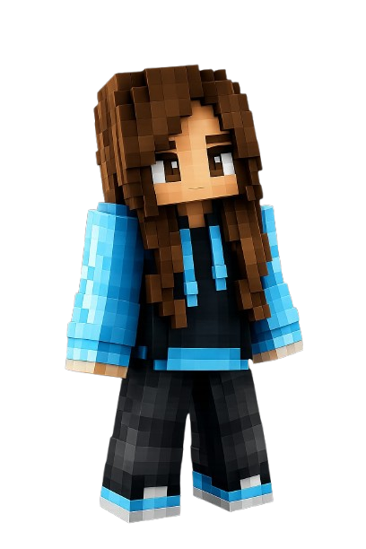
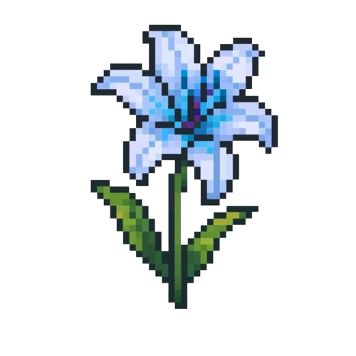
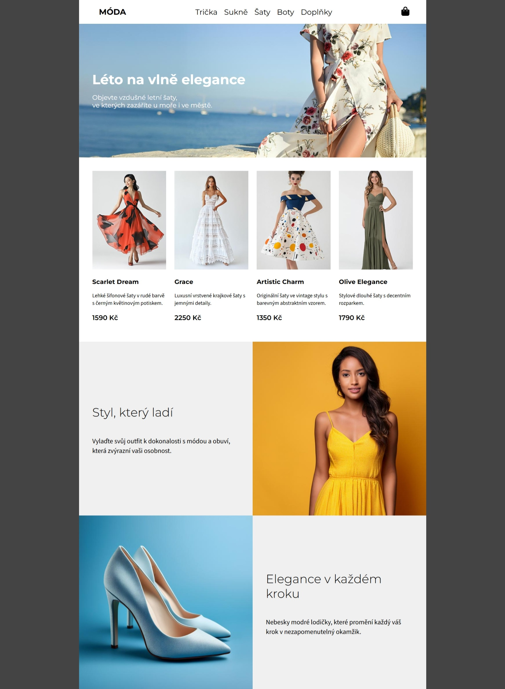
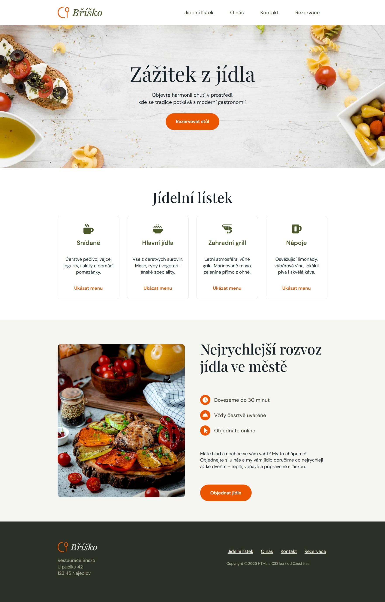
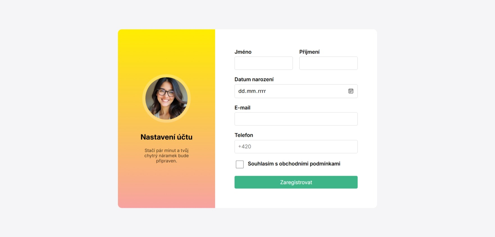
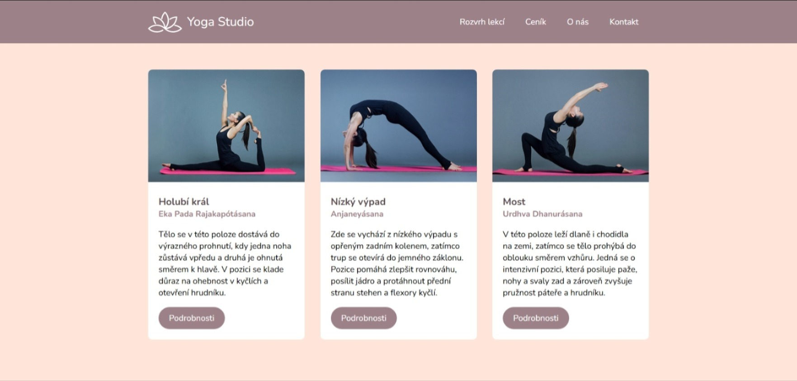

Studentka, co se ráda učí.

Jsem studentka 1. řočníku informačních technologií a zajímá mě, co všechno technologie dokážou a jak mění svět kolem nás.
Věřím, že IT není jen o psání kódu, ale především o hledání cest, jak vyřešit složité problémy. I když jsem na začátku své cesty, ke studiu přistupuji s chutí zkoumat každý detail.
Proč právě IT?
Moje cesta začala zvědavostí, jak to vlasně funguje a co za tím webem vůbec stojí. U webů mě motivuje a baví vidět okamžitý výsledek. Vždy mě zajímá, jak a proč to funguje. Škola mi udělala "obrázek" o tom, co to obnáší. Absolbovala jsem i dva kurzy od chzechitas, které mi pomohli se zlepšit. První byl kurz samostudijní a druhý formou výuky. Dále se chci zlepšovat ve tvorbě webových stránek a objevovat nové věci.


Je to návrh pro web zaměřený na dámské oblečení. Důraz je kladen na moderní rozložení prvků a estetickou vyváženost. Web působí velmi čistým a elegantním dojmem

Jedná se o moderní jednostránkový web fiktivní restaurace Bříško. Zdůrazňuje přehlednost a barevnou kombinaci k potřebným informacím. Je taky zcela responsivní

Cílem bylo vytvořit intuitivní formulář pro uživatele a zároveň zachovat přehlednost i s výrazným přechodem barev v pozadí

Tento projekt představuje webové stránky jóga studia s klidným a estetickým stylem. Dostatek volného prostoru zajišťuje lepší čitelnost a je plně responzivní